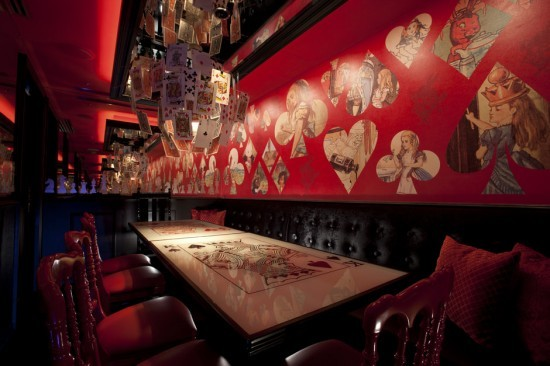
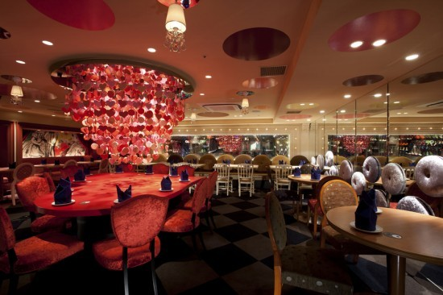
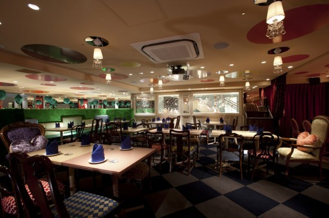
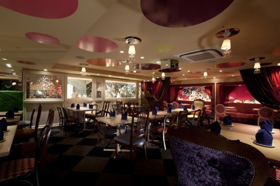
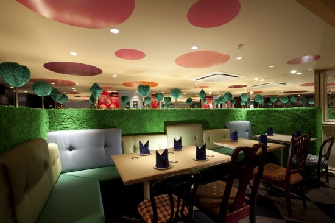
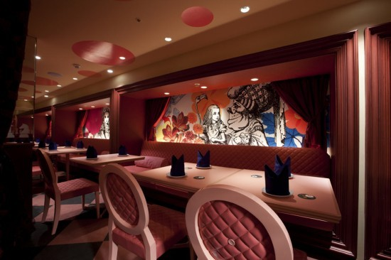
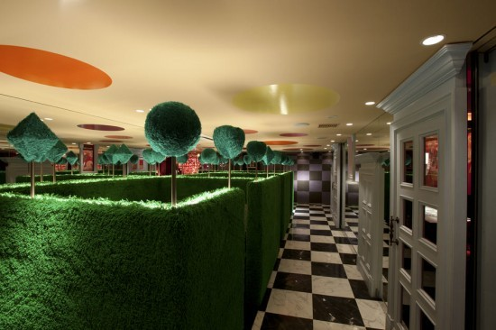
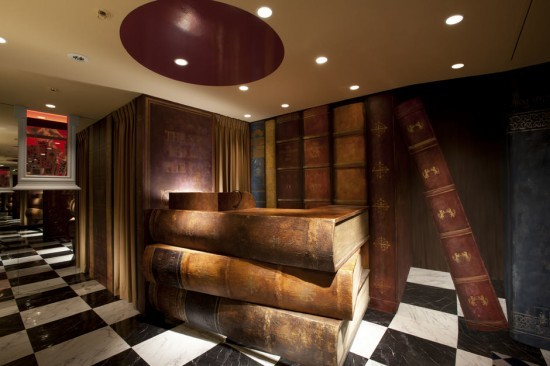

Wed, 04 May 2011 09:35:00 · AliceInWonderland · design · Tokyo · Restaurant · gastronomy
alice in wonderland coming to your door step as a








Alice in Wonderland… coming to your door step as a restaurant in Tokyo! Brought to you by Fantastic Design Works Co., this themed restaurant wonderfully combined all sort of magical elements in Alice into a seamless journey between space and gastronomy.
Save the address if you plan a visit to Tokyo next time, they’re located somewhere in Ginza…